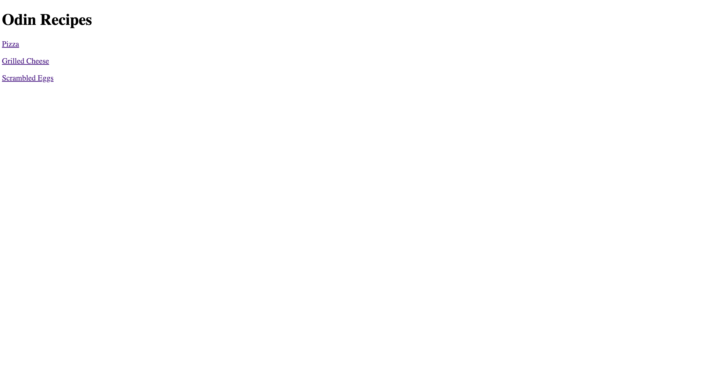
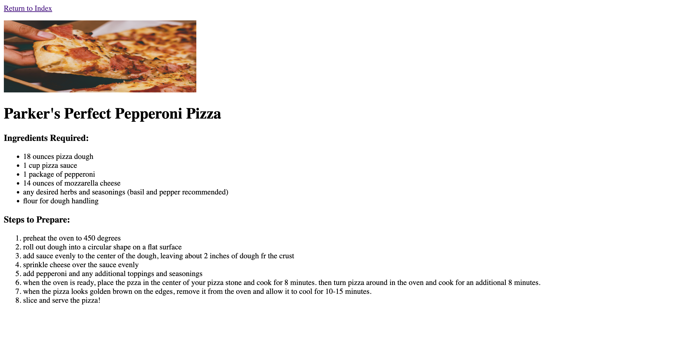
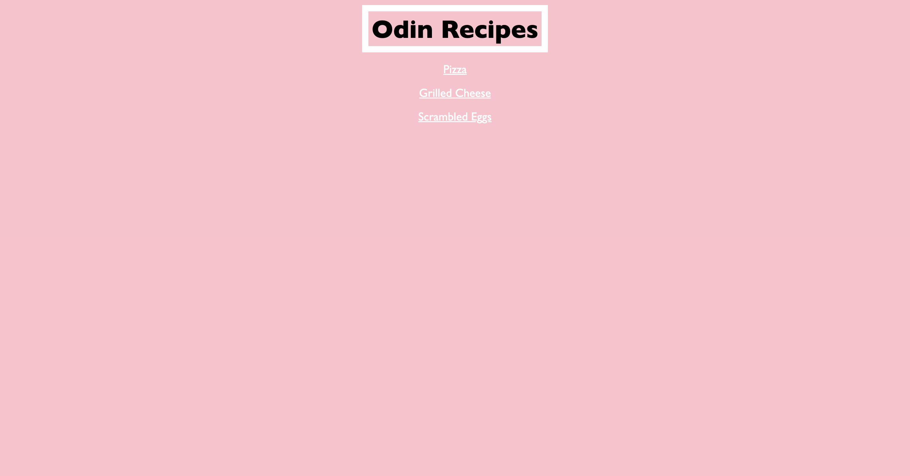
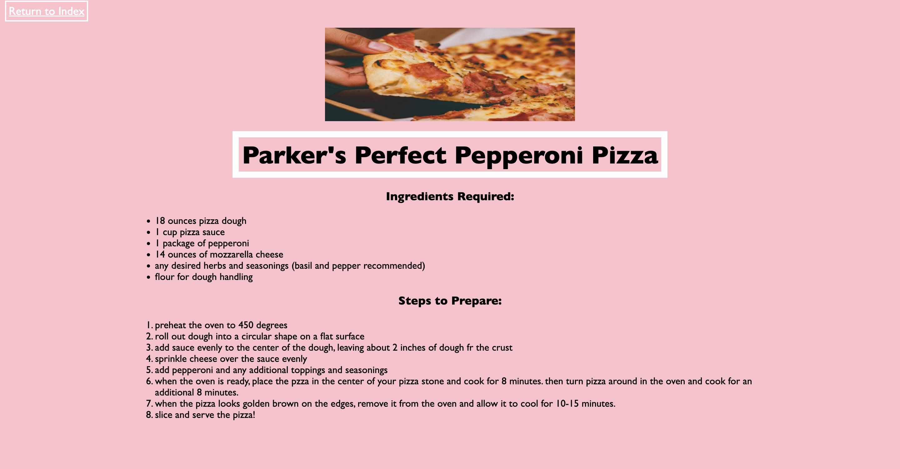
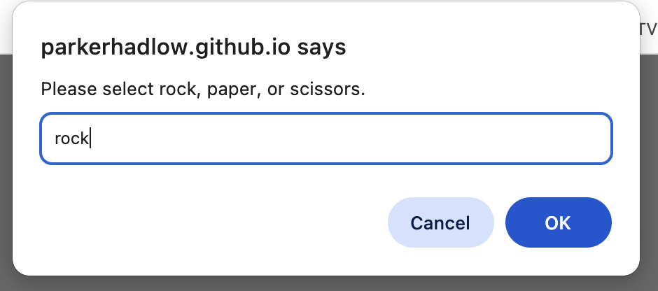
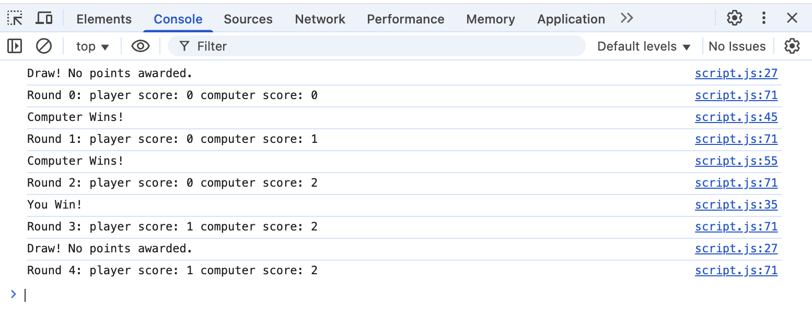
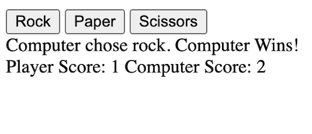
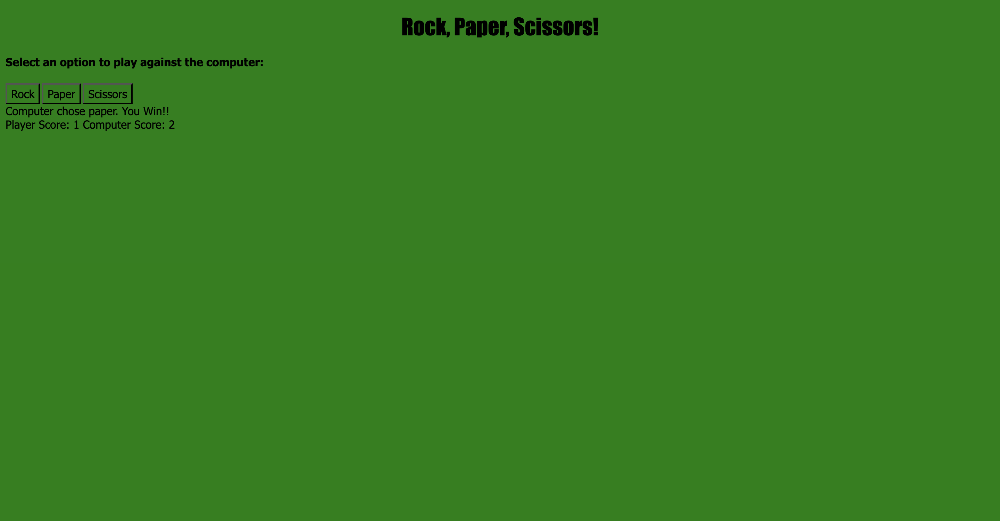

For my Capstone project, I chose to learn the basic skills of a full-stack web developer to broaden my understanding
of computer science and benefit me in my future career as a software engineer. I chose to learn HTML, CSS, Flexbox, and JavaScript
as my beginning tools to accomplish this goal. I kept notes and built projects throughout my process (and this webpage is one of them!).
I used The Odin Project website for the majority of my learning, and I took detailed notes with code examples from my own projects. On
this final project webpage, I will summarize the main subjects I learned about and showcase the projects I've been building.
What does it mean to be "Full-Stack?"
A full-stack web developer is someone who has the skillset to work on the front end and the back end of web development.
This means a full-stack developer works with both what the user sees, and the moving pieces in the background.
GitHub
Part of learning these skills that was really important to me was using the tools that professionals work with. One very important
delopment tool for collaboration in the field of computer science is GitHub, which allows a public space to store different versions of code
and work alongside other developers on different branches. All of my code for this project is public on my GitHub page, so feel free to take a look!
HyperText Markup Language (HTML)
I began building my Full-Stack toolkit with HTML, a language that determines how documents and web pages are displayed in a web browser, the language for the building blocks of any website.
HTML essentially contains all the content and basic layout for a webpage. Once I had learned the ropes of this language, I built a recipe book project with three simple recipes all from scratch
using just HTML. Here's what it looked like.


Cascading Style Sheets (CSS)
Learning CSS was my next step to enhancing my designs. CSS is the language that determines how a document created in HTML is styled, so it allows a more specific layout
and customization to each piece of HTML. To show my new understanding of CSS, I re-worked my HTML project to make it look a lot nicer.


Flexbox
Another key to mastering CSS is using Flexbox, a tool that helps organize information into a box model that essentially lays every piece of HTML into a series of boxes
that are arranged to make up every webpage. This webpage you're reading off of now uses Flexbox!
JavaScript
Once I kearned HTML, CSS, and Flexbox, the one missing component was JavaScript. JavaScript is the key to making any webpage interactive. It gives you the tools to make the HTML and CSS of a webpage
dynamic, or able to be changed based on user activity. The first part of JavaScript came down to mastering the code and syntax. I spent a long time running through excercises and learning about how
to write functions. I covered all the basics and familiarized myself with Chrome DevTools to code my first project: a rock, paper, scissors game that was played completely in the console log. (see right)


Document Object Model (DOM)
The last step to utilizing JavaScript was learning how to merge all the webpage deisgn I had done earlier and the pieces of JavaScript code. This is done using the DOM, which esentially
selects different nodes in the HTML and assigns them actions. For instance, I can create a button and assign it to change the color of the page when someone clicks it. Give it a try!
To include the DOM in my projects, I went back to the rock, paper, scissors game and completely redid it to play in a webpage instead of the console. Take a look ->

I then added some CSS to create a final output page ->

Moving Forward
I plan on using all the skills I learned in this project in my further schooling and career to come, with a major in computer science through college and hopefully a future job in software engineering.
This year, I'm focusing on learning Java, but will be sure to keep practicing with JavaScript and continue growing my skillset as a full-stack developer. If you're intrested in learning more about my process
or diving deeper into the topics covered on this page, take a look at my Full Notes!